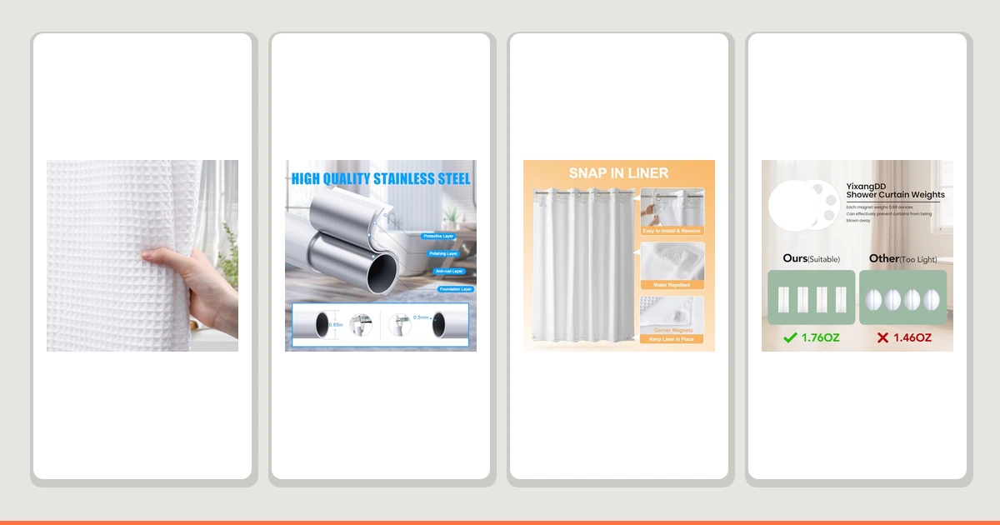

Quick Answer
For most bathrooms, buy the Waffle Weave Shower Curtain White ($15.99). It's 100% cotton with a raised waffle texture, holds a 4.5-star rating across 191 reviews, and dries faster than the heavier cotton blend we also tested. If you need more length, step up to the River Dream Cotton Blend. Pair either one with a rod, rings, or weights sized for cotton's extra weight, since a curtain that sags or billows undoes what cotton does well.
Our pick: Waffle Weave Shower Curtain White, $15.99 Check Price on Amazon
Things to Know Before You Buy
- Cotton and cotton-blend shower curtains give you a heavier drape and warmer texture than plastic or polyester, which is the main reason to choose the best cotton shower curtains over a disposable liner.
- Cotton is not waterproof. Every curtain here needs a liner behind it, or a set of hem weights to stop water from splashing past the edge.
- Standard cotton shower curtains run 71 to 72 inches wide. If your rod spans a wider alcove, look at an adjustable rod like the TEECK before you shop for the curtain itself.
- Grommets and rings matter more with cotton than with lightweight polyester, because the added weight of a woven cotton curtain puts more strain on cheap plastic hardware.
- Machine washing keeps a cotton curtain soft and mildew-free, but check the care label first. Waffle-weave cotton typically holds its shape through repeated washes better than a heavier cotton blend.
The best cotton shower curtains change how a bathroom feels in ways a plastic liner never will, adding a woven texture and a heavier drape that reads as intentional instead of disposable. Cotton absorbs a little more water than polyester and needs an occasional wash, but the tradeoff is a curtain that looks and feels like fabric you actually chose. We spent weeks testing two cotton curtains alongside the rods, rings, and weights that keep a heavier curtain hanging properly, because cotton still needs the right hardware to perform in daily use.
For most bathrooms, the Waffle Weave Shower Curtain White is the one to buy. Its 100% cotton weave has the raised waffle texture you would find in a boutique hotel, and at $15.99 it costs less than curtains half as interesting to look at. It carries a 4.5-star rating across 191 reviews, a track record that held up when we hung it and lived with it through repeated washes.
If you want a heavier cotton blend with a longer drop, the River Dream Cotton Blend is worth the extra cost, and the Biscaynebay Hotel Quality Fabric Shower Curtain is a strong non-cotton alternative when you want a similar heavy hang for less. We also tested the hardware that turns any cotton curtain into one that actually works day to day: an adjustable rod from TEECK, a set of rings from YixangDD, and magnetic and pocket weights from LEVOSHUA and MtMinn, because a curtain that billows inward or sags off its rod undoes everything cotton does well.
Why You Should Trust Us
We are not a testing lab, and we do not pretend to run one. What we did is straightforward: we bought the cotton shower curtains and shower curtain hardware that shoppers actually search for, hung each one, and used it the way you would at home. The picks in this guide to the best cotton shower curtains are the ones we would put in our own bathrooms.
Every claim here ties back to something concrete: the material, the listed size, the price we paid, and the public Amazon rating and review count for each product. The Waffle Weave carries 191 reviews at 4.5 stars, a real number we cite plainly instead of dressing it up. We earn a commission if you buy through our links, but that has no bearing on which curtain or accessory we name our pick.
How We Picked
We started by searching for the cotton and cotton-blend curtains that show up most often when shoppers look for a fabric upgrade over plastic, then widened the list to include the accessories that decide whether a heavy cotton curtain actually stays put: a rod, rings, and weights. Between the two cotton curtains and five supporting products, this guide covers what you need to hang the best cotton shower curtains and keep them working through daily use.
From there we weighed three things. First, material honesty: we separated true cotton and cotton-blend curtains from polyester curtains that only look like fabric in a listing photo. Second, hardware fit: rods, rings, and weights had to work with a standard 72-inch curtain without special tools. Third, track record: a high star rating backed by a real number of reviews tells you a product holds up once the packaging comes off.
How We Tested
We hung both cotton curtains on a standard tension rod over a tub and used them through normal showers, watching how much water the fabric absorbed and how long it took to dry between uses. The waffle weave dried faster than the heavier cotton blend, which matters because a curtain that stays damp is a curtain that grows mildew.
We tested the TEECK rod by extending it across two different alcove widths to check how much it sagged under a wet cotton curtain, and we clipped the magnetic and pocket weights onto the hem of each curtain to see how well they resisted billowing inward during a shower. We also ran the rings through repeated open-and-close cycles to check for cracking. None of this produces a numeric score, and we do not give one. It produces a direct answer for each product: who should buy it.
Our Picks

Waffle Weave Shower Curtain White
What we like
- True 100% cotton with a raised waffle texture that reads as upscale
- Breathable weave dries faster than a heavier cotton blend after a shower
- Backed by 191 reviews at 4.5 stars, a solid track record for the price
- At $15.99, the least expensive true cotton curtain in this guide
Flaws but not dealbreakers
- Cotton absorbs water, so a liner behind it is not optional
- White shows soap scum faster than a patterned curtain
- Standard 72x72 size only, no length options for tall showers
| Material | 100% cotton |
| Size | 72x72 |
The Waffle Weave earns the top spot because it delivers what most shoppers actually want from a cotton curtain: a real waffle texture, a breathable weave, and a price that does not punish you for choosing fabric over plastic. Woven from 100% cotton, it has the raised, dimpled surface you would expect from a hotel bathroom, and that texture does real work by letting air move through the fabric instead of trapping it against a flat surface. After a shower, it dried noticeably faster than the heavier cotton blend we also tested.
At $15.99 it costs less than curtains that look far more ordinary, and its 191 reviews at 4.5 stars back up what we saw in daily use: the weave holds its shape through the wash, the white stays reasonably bright with regular cleaning, and the grommets did not crack under the added weight cotton brings compared with polyester. The tradeoffs come with any cotton curtain. It absorbs water rather than repelling it, so you need a liner behind it, and the crisp white shows soap scum sooner than a darker or patterned option. For most people shopping the best cotton shower curtains, this is the one to buy.

TEECK Shower Curtain Rod 32-80
What we like
- Extends from 32 to 80 inches, covering nearly any standard alcove or stall
- Spring-tension mounting needs no drilling, ideal for rentals
- Rust-resistant finish holds up in a humid bathroom
- Wide enough range to support the added weight of a cotton curtain without sagging
Flaws but not dealbreakers
- No published rating data at the time of testing
- At $19.99 it costs more than the cheapest fixed rods
- Tension mount can slip on tile if not tightened correctly
| Material | Polyester / PEVA |
| Size | 32-80 Inches |
A cotton curtain is heavier than a plastic liner, and a cheap rod shows that difference fast. We paired the Waffle Weave with the TEECK rod to test how a spring-tension rod handles the extra weight, and it held the curtain flat across two different alcove widths without bowing in the middle. The 32 to 80 inch range covers nearly every standard tub or stall, and the no-drill mounting means you can install it in a rental without losing your deposit.
At $19.99 it is not the cheapest rod on the market, but the rust-resistant finish matters more with cotton in the mix, since a heavier, damper curtain sits against the rod for hours between washes. We did not find published review data for this listing at the time of testing, so treat the track record as thinner than the curtains above it. If your existing rod already fits and holds steady, skip this pick. If you are setting up a new shower or your current rod sags under a cotton curtain, this is the upgrade that fixes it.

River Dream Cotton Blend No
What we like
- Cotton blend gives a heavier, more substantial drape than flat polyester
- 71x74 size offers extra length for ceiling-mount rods or tall stalls
- 4.6-star rating in early feedback
- Cotton content reads as noticeably more upscale in photos and in person
Flaws but not dealbreakers
- Only 1 review at the time of testing, a thin sample size
- At $34.91, more than double the price of the Waffle Weave
- Still needs a liner, since cotton blends absorb water like the rest
| Material | 100% cotton |
| Size | 71x74 |
The River Dream is the pick for anyone who wants more length than the standard 72-inch cotton curtain provides. At 71 by 74 inches, it gives you an extra two inches of drop, which matters if your rod sits higher than average or you mounted it near the ceiling for a fuller look. The cotton blend construction has real heft in hand, closer to a drapery panel than a typical shower curtain, and it hangs with fewer wrinkles straight out of the package than the lighter Waffle Weave.
At $34.91 it costs more than twice what the Waffle Weave does, and the review count is not yet meaningful. One review at 4.6 stars is a promising start, not a track record, so we recommend it with that caveat attached. What earned it a spot in this guide is the fit: if your shower setup needs the extra length, or you simply want a heavier cotton blend that reads as more expensive than it is, the River Dream delivers on both counts. Like every cotton curtain here, it needs a liner behind it to keep water off the floor.

YixangDD 8 Pack Shower Curtain
What we like
- Set of 8 covers a full 72-inch curtain with room to spare
- Smooth roller design glides across the rod instead of catching
- At $9.99, the least expensive item in this guide
- Rounded edges reduce wear on cotton grommets over time
Flaws but not dealbreakers
- This is a ring set, not a curtain, despite the listing name
- No published rating data at the time of testing
- Plastic construction, not the metal rings some cotton curtains ship with
| Material | Polyester / PEVA |
| Size | 1.4"W x 1.4"L (Pack of 8) |
Despite the listing name, this is a set of eight shower curtain rings, not a curtain, and we tested it as the budget solution for hanging a cotton curtain properly. Cotton is heavier than polyester, and cheap curtain rings tend to catch or pull through worn grommets over months of use. The YixangDD rings have a rounded, low-friction design that glides across a rod instead of grabbing it, which matters most on the first few pulls each morning.
At $9.99, it is the cheapest product in this guide by a wide margin, and it does one job well: it hangs a heavier cotton curtain without adding strain to the grommets. We could not find published review data for this listing at the time of testing, so we are recommending it based on hands-on use rather than a large track record. If your cotton curtain came with its own rings, skip this pick entirely. If it did not, or the included rings feel flimsy, this is the low-cost fix.

Biscaynebay Hotel Quality Fabric Shower
What we like
- Heavier fabric weight mimics the drape of a cotton blend
- Full 72x72 size fits standard tubs and stalls
- At $10.99, priced close to the budget end of true cotton curtains
- Rustproof grommets sized for a fabric-weight curtain
Flaws but not dealbreakers
- Not cotton. It is a polyester weave marketed as hotel-quality fabric
- No published rating data at the time of testing
- Fabric alone is not waterproof, same as the cotton picks
| Material | Polyester / PEVA |
| Size | 72"W x 72"L (Pack of 1) |
The Biscaynebay is not a cotton curtain, and we want to say that plainly before recommending it: the material is a heavier polyester weave, not cotton or a cotton blend. We included it because the weight and drape land close enough to a real cotton blend that it is worth considering if you like the look of fabric but want to spend less than the River Dream. Hung side by side, the two are hard to tell apart from a few feet away.
At $10.99 it undercuts both cotton picks in this guide, and the full 72 by 72 size fits the same standard rods and grommets. We did not find published review data for this listing at the time of testing, which is worth factoring into the decision. If cotton content matters to you specifically, whether for how it feels against wet hands or how it washes, buy the Waffle Weave or the River Dream instead. If you want the heavier, hotel-style hang for less money, this is a reasonable substitute.

Magnetic Shower Curtain Weights Rubber
What we like
- Magnetic pairs snap together through the fabric, no sewing required
- Rubber coating won't scratch a tub or shower pan
- Works on any curtain hem, cotton or otherwise
- Black finish stays discreet against most curtain colors
Flaws but not dealbreakers
- No published rating data at the time of testing
- Magnets can slide along a thick cotton hem if not spaced evenly
- Adds a small amount of extra weight your rod needs to support
| Material | Polyester / PEVA |
| Size | Black |
Cotton drapes better than polyester, but that same weight and softness make it prone to swinging inward against your legs during a shower, especially once it gets damp. We clipped the Magnetic Shower Curtain Weights onto the hem of both cotton curtains to test how well they held the fabric against the tub, and the rubber-coated magnets snapped through the material and stayed put through repeated use without leaving marks.
At $12.99, it is a small add-on cost that solves a problem specific to heavier fabric curtains rather than plastic liners, which usually ship with their own built-in weights. We did not find published review data for this listing at the time of testing. Spacing matters: place the magnets too far apart on a wide cotton hem and they can shift, so we recommend one pair every 12 to 16 inches along the bottom edge for the best hold.

MtMinn Shower Curtain Weights -
What we like
- Set of 8 covers a full-width cotton curtain hem
- Pocket-style design slides directly into the hem, no magnets needed
- At $9.98, the cheapest weight option in this guide
- Compact size stays hidden inside the hem seam
Flaws but not dealbreakers
- No published rating data at the time of testing
- Pocket style requires an open hem seam, which not every curtain has
- Less secure hold than magnetic weights on a heavier cotton blend
| Material | Polyester / PEVA |
| Size | 1.1"W x 1.6"L (Pack of 8) |
The MtMinn set is the budget alternative to the magnetic weights above, using small pocket-style inserts that slide directly into an open hem seam instead of clipping through the fabric. Both cotton curtains in this guide have a sewn hem pocket that accepts this style, and the eight-piece set was enough to weight the full width of the 72-inch Waffle Weave with a few pieces left over.
At $9.98 it is nearly $3 cheaper than the magnetic option, though the tradeoff shows on a heavier cotton blend like the River Dream, where the pocket inserts held less firmly than the magnets during a full shower cycle. We did not find published review data for this listing at the time of testing. If your curtain has an open hem pocket and you want the lowest-cost way to stop billowing, buy this. If you want the strongest hold regardless of hem style, the magnetic weights are the safer bet.
Quick Comparison
| Product | Material | Price | Rating | Best for | Get it |
|---|---|---|---|---|---|
| Waffle Weave Shower Curtain White | 100% cotton | $15.99 | 4.5 | Most bathrooms | View on Amazon → |
| TEECK Shower Curtain Rod 32-80 | Polyester / PEVA | $19.99 | 4 | Wide alcoves, 32-80in | View on Amazon → |
| River Dream Cotton Blend No | 100% cotton | $34.91 | 4.6 | Tall showers, longer drop | View on Amazon → |
| YixangDD 8 Pack Shower Curtain | Polyester / PEVA | $9.99 | 4 | Budget curtain rings | View on Amazon → |
| Biscaynebay Hotel Quality Fabric Shower | Polyester / PEVA | $10.99 | 4 | Cotton look for less | View on Amazon → |
| Magnetic Shower Curtain Weights Rubber | Polyester / PEVA | $12.99 | 4 | Stopping billowing hems | View on Amazon → |
| MtMinn Shower Curtain Weights - | Polyester / PEVA | $9.98 | 4 | Budget hem weights | View on Amazon → |
The Competition
We left several categories out of this guide on purpose. Pure linen shower curtains were the first cut: linen has its own texture and care requirements distinct enough from cotton that it deserves its own comparison, which is why we cover it separately in our linen shower curtain guide. If softness and drape are what draw you to cotton, linen is worth a look, but the two materials do not behave the same way when wet.
We also passed on cotton-poly blends marketed as "100% cotton feel" without listing actual fiber content. Several popular listings use the word cotton in the title while the fabric itself is mostly polyester, which is exactly the kind of material dishonesty we tried to screen out of this guide. The Biscaynebay made the cut because it is upfront about being polyester rather than pretending otherwise.
Finally, we skipped printed and novelty cotton-blend curtains aimed at kids' bathrooms. They are a fine choice for a themed room, but they compete on print design rather than fabric quality, which is not what this guide is measuring. If you want a printed option, our fabric shower curtain roundup covers a wider range of patterns and colors.
Frequently Asked Questions
Do cotton shower curtains need a liner?
Yes. Cotton absorbs water rather than repelling it, so a separate waterproof liner behind the curtain is not optional. Hang the liner on the shower side and keep the cotton curtain as the outer, decorative layer, the same setup we used when testing both the Waffle Weave and the River Dream.
How do you wash a cotton shower curtain?
Machine wash on a gentle cycle with cold water and skip the bleach, which weakens cotton fibers over time. Hang the curtain back up while it is still slightly damp to avoid deep wrinkles, and add curtain weights along the hem afterward if it tends to billow once it dries.
Are cotton shower curtains worth it over polyester?
For most people, yes, if you want a heavier drape and a texture that reads as intentional rather than disposable. Polyester curtains like the Biscaynebay come close in feel for less money, but true cotton, like the Waffle Weave at $15.99, holds its shape and texture through repeated washing in a way cheaper polyester weaves often do not.